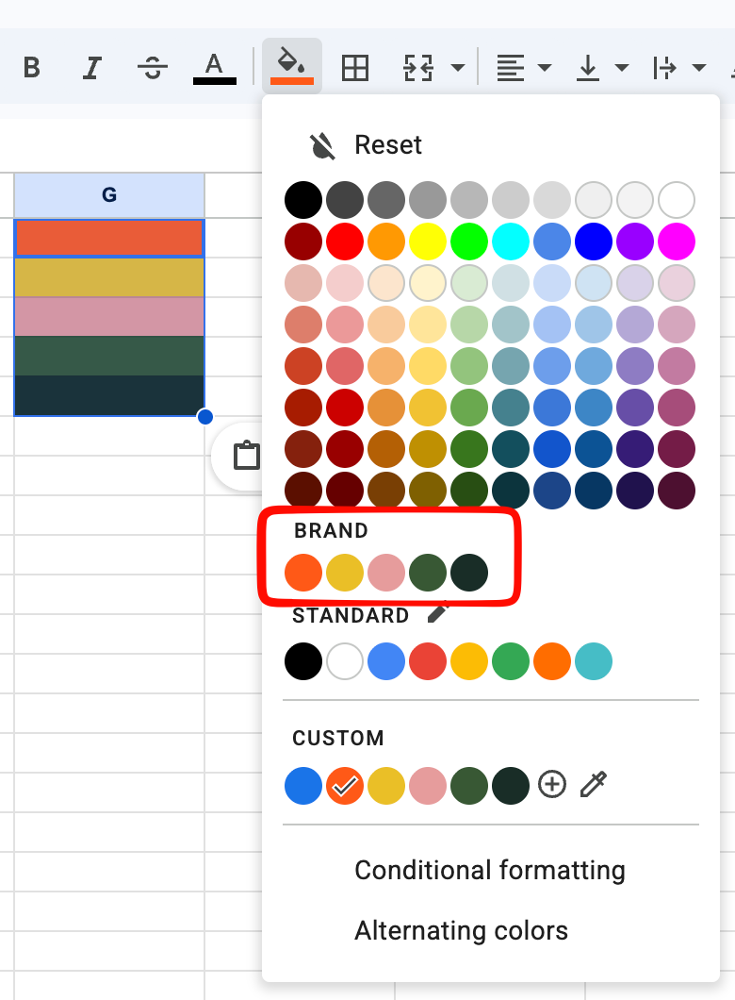

One click, in Google's own picker
A Brand row sits inside the fill, text, border, and table color menus in Docs, Sheets, and Slides. Click a color and it applies like a built in one.

A Brand row sits inside the fill, text, border, and table color menus in Docs, Sheets, and Slides. Click a color and it applies like a built in one.
